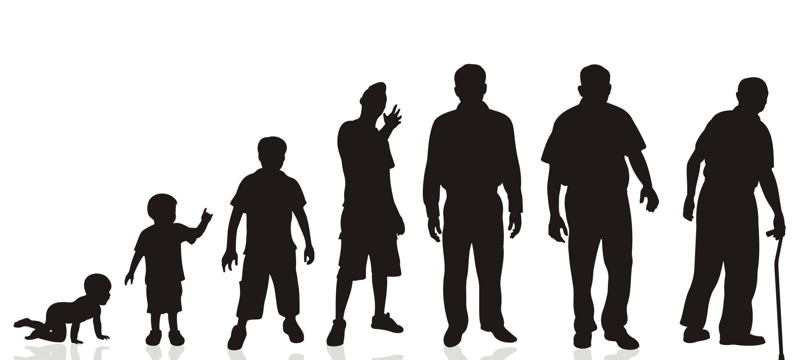

As we grow older, we change in many differnt ways. One interesting change that happens is that we develop sexually. In other words, our bodies prepare us for sex.

Infant & Toddlers (Age: 0 - 3)
Double their height and triple their height between birth and age three
Develop 75 percent of their brain capacity
Begin to control body functions through toilet training
Preschoolers (Age: 4 - 5)
Experience vaginal lubrication or erection
Reach at least 50 percent of their adult height and about 20 percent of their adult weight
Continue significant brain development, completing 90 percent of such development by age five
Appear about the same size, regardless of gender
Grade Schoolers (Age: 6 - 8)
Prefer to socialize with their own gender
May engage in same-gender sexual exploration
Begin to develop as an individual
Preteen (Age: 9 - 12)
Puberty:
Growth spurt, weight gain, muscle growth, and genital maturation
Hormones produced in the pituitary gland trigger production of:
Testosterone in males (ages 11 - 14)
Estrogen/progesterone in females (ages 9 - 12), causing:
Oily skin and pimples
Increased sweating and possibly body odor.
Armpit and pubic hair and, in males, hair on face and chest.
Body proportions to change [hips widen in females, shoulders broaden in males].
In males: genitals mature, scrotum darkens, voice deepens, sperm is produced, and erections, ejaculation, and wet dreams are more frequent.
In females: genitals mature, breasts develop, vaginal lubrication increases, and ovulation and menstrual cycle begin.
Masturbate and may have fantasies about others.
Teenagers (Age: 13 - 17)
Have an understanding of their own sexual orientation
Complete puberty and the physical transition from childhood to adulthood
Reach nearly their adult height
Adults (Age: 18+)
Understand their own sexual orientation, although they may still experiment
Experience more intense sexuality
Complete the process of physical maturation, usually attaining full adult height